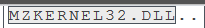
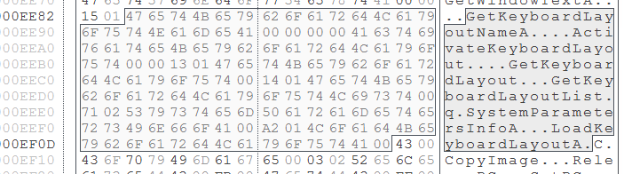
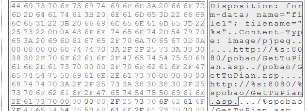
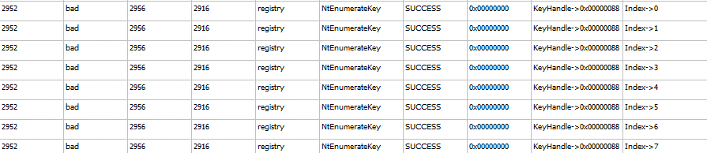
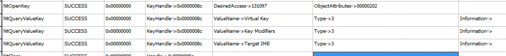

There are four key malware dependencies, that is, four key pieces of malware that represent the malware lifecycle. For each step, there are different methods to achieve different goals.
Luckily each one of these steps represent an opportunity for a defense, as we can work to block, detect and delete malware at each stage of its lifecycle.
This week, we were tasked with finding malware among a set of four files. In addition to the previous tools, we used Cuckoo to analyze the process calls throughout its lifecycle. Though Cuckoo can be used to network multiple VMs together, it provided a lot of functionality to diagnose malware.
Using FileInsight and Cuckoo, I was able to determine the file with hash, 068D5B62254DC582F3697847C16710B7 to be malware. After both a static and dynamic analysis, it is reasonable to conclude that 068D infects a system with a keylogger and attempts to send its information via http requests.
A string dump of the file showed a number of suspicious strings inside the file.



Running the cuckoo to analyze the process we see the following actions:


The program appears to enumerate the keyboard, presumably to log the keystrokes, then it sends the information to GetTuPian.asp via html request.
Luckily, we can target the file directly with the following Yara signature:
rule keylogger
{
strings:
$s1=”/pobao/GetTuPian.asp”
$s2=”MZKERNEL32.DLL”
condition:
$s1 and $s2 at 0
}
This searches for the specific phrase, /pobao/GetTuPian.asp, and then to make sure we’re not getting a false positive in some text file, we make sure the file starts with the string: MZKERNEL32.DLL.
This will locate the problematic file immediately with no false positives.